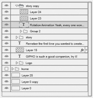

Motion Creation
GIPHO is a path follower, so you can define the path for an object and let gipho follow it.
Rotation Animation
Yeah, every one wonders why photoshop does not support rotation animation. GIPHO does though, and comes with a pre-defined animation library.
Recorded Actions
Repetitive tasks should be shrunk down to one magic wound swing, and gipho knows that. It's got MAGIC

Remeber the first time you wanted to create your first awesome gif image and you wondered which software you can use to accomplish the task?
If you do, then you probably also remeber reading on the internet that you need a video editor to create awesome animation only to end up reducing your cool video into photoshop’s frame timeline. And you wonder why Adobe hasn’t yet provided you with the necessary to do it right using Photoshop in the first place.
Well, to be honest, photoshop did provide you with the necessary tools and funcitonality, but these are for advanced users and are not directly given to you.
Your companion, GIPHO, does all the dirty work for you providing you with an awesome UI that gamifies the entire process of gif creation. from motion to frame creation to batch processing, GIPHO knows it all!